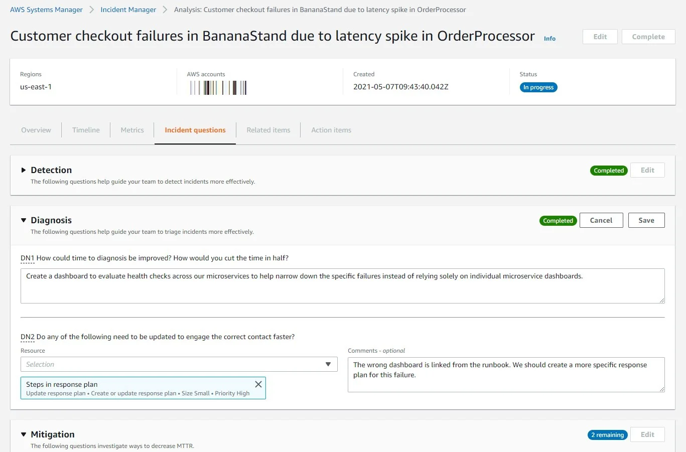

Published: 2021-05-10 | Originally published at AWS Blog
IT engineers pride themselves on the skill and care they put into building applications and infrastructure. However, as much as we all hate to admit it, there is no such thing as 100% uptime. Everything will fail at some point, often at the worst possible time, leading to many a ruined evening, birthday party, or wedding anniversary (ask me how I know).
As pagers go wild, on-duty engineers scramble to restore service, and every second counts. For example, you need to be able to quickly filter the deluge of monitoring alerts in order to pinpoint the root cause of the incident. Likewise, you can’t afford to waste any time locating and accessing the appropriate runbooks and procedures needed to solve the incident. Imagine yourself at 3:00A.M., wading in a sea of red alerts and desperately looking for the magic command that was “supposed to be in the doc.” Trust me, it’s not a pleasant feeling.
Serious issues often require escalations. Although it’s great to get help from team members, collaboration and a speedy resolution require efficient communication. Without it, uncoordinated efforts can lead to mishaps that confuse or worsen the situation.
Last but not least, it’s equally important to document the incident and how you responded to it. After the incident has been resolved and everyone has had a good night’s sleep, you can replay it, and work to continuously improve your platform and incident response procedures.
All this requires a lot of preparation based on industry best practices and appropriate tooling. Most companies and organizations simply cannot afford to learn this over the course of repeated incidents. That’s a very frustrating way to build an incident preparation and response practice.
Accordingly, many customers have asked us to help them, and today, I’m extremely happy to announce Incident Manager, a new capability of AWS Systems Manager that helps you prepare and respond efficiently to application and infrastructure incidents.
If you can’t wait to try it, please feel free to jump now to the Incident Manager console . If you’d like to learn more, read on!
Introducing Incident Manager in AWS Systems Manager
Since the launch of Amazon.com in 1995, Amazon teams have been responsible for incident response of their services. Over the years, they’ve accumulated a wealth of experience in responding to application and infrastructure issues at any scale. Distilling these years of experience, the Major Incident Management team at Amazon has designed Incident Manager to help all AWS customers prepare for and resolve incidents faster.
As preparation is key, Incident Manager lets you easily create a collection of incident response resources that are readily available when an alarm goes off. These resources include:
In short, creating a response plan lets you prepare for incidents in a standardized way, so you can react as soon as they happen and resolve them quicker. Indeed, response plans can be triggered automatically by a Amazon CloudWatch alarm or an Amazon EventBridge event notification of your choice. If required, you can also launch a response plan manually.
When the response plan is initiated, contacts are paged, and a new dashboard is automatically put in place in the Incident Manager console . This dashboard is the point of reference for all things involved in the incident:
Here’s a sample dashboard. As you can see, you can easily access all of the above in a single click.
After the incident has been resolved, you can create a post-incident analysis, using a built-in template (based on the one that Amazon uses for Correction of Error ), or one that you’ve created. This analysis will help you understand the root cause of the incident and what could have been done better or faster to resolve it.
By reviewing and editing the incident timeline, you can zoom in on specific events and how they were addressed. To guide you through the process, questions are automatically added to the analysis. Answering them will help you focus on potential improvements, and how to add them to your incident response procedures. Here’s a sample analysis, showing some of these questions.

Finally, Incident Manager recommends action items that you can accept or dismiss. If you accept an item, it’s added to a checklist that has to be fully completed before the analysis can be closed. The item is also filed as an OpsItem in AWS Systems Manager OpsCenter , which can sync to ticketing systems like Jira and ServiceNow.
Getting Started
The secret sauce in successfully responding to IT incidents is to prepare, prepare again, and then prepare some more. We encourage you to start planning now for failures that are waiting to happen. When that pager alarm comes in at 3:00AM, it will make a world of difference.
We believe Incident Manager will help you resolve incidents faster by improving your preparation, resolution and analysis workflows. It’s available today in the following AWS Regions:
Give it a try , and let us know what you think. As always, we look forward to your feedback. You can send it through your usual AWS Support contacts, or post it on the AWS Forum for AWS Systems Manager.
If you want to learn more about Incident Manager, sign up for the AWS Summit Online event taking place on May 12 and 13, 2021.
Julien is the Artificial Intelligence & Machine Learning Evangelist for EMEA . He focuses on helping developers and enterprises bring their ideas to life. In his spare time, he reads the works of JRR Tolkien again and again.
{kind=link}
{kind=link}